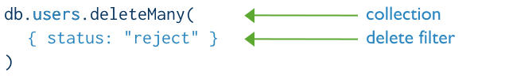

MongoDB CRUD Operation
Mongo DB는 Create, Read, Update, Delete Operation을 제공합니다.
DDL SQL vs Mongo DB
Create Operations
Create, Insert Operation은 컬렉션(Collection)에 도큐먼트(Documents)를 삽입합니다.
만약 컬렉션이 아직 존재하지 않는다면, 도큐먼트 삽입과 동시에 컬렉션이 생성됩니다.
Mongo DB는 아래와 같은 도큐먼트 삽입을 위한 메서드를 제공합니다.
- db.collection.insertOne() (collection 자리에 실제 collection명을 기재)
- db.collection.insertMany()
모든 Mongo DB의 삽입 연산은 단일 컬렉션을 대상으로 하며, 모든 쓰기 작업은 단일 도큐먼트에 대해 원자적입니다.

Insert SQL vs Mongo DB Insert
Read Operations
읽기 작업(Read Operations)는 컬렉션에서 도큐먼트(Documents)를 검색합니다. (컬렉션을 쿼리하여 문서를 조회)
Mongo DB는 아래와 같은 도큐먼트 조회를 위한 메서드를 제공합니다.
- db.collection.find() (collection 자리에 실제 collection명을 기재)
Mongo DB 쿼리 간 filter와 조건을 통해 특정한 도큐먼트를 조회할 수 있습니다.
위의 쿼리는 SQL로 표현한다면 아래와 같습니다.
1 | SELECT name, address |
Select SQL vs Mongo DB Read
Update Operations
수정 작업 (Update Operations)은 컬렉션 내에 존재하는 도큐먼트를 수정합니다.
Mongo DB는 컬렉션 내의 도큐먼트 수정을 위해 아래와 같은 메서드를 제공합니다.
- db.collection.updateOne() (collection 자리에 실제 collection명을 기재)
- db.collection.updateMany()
- db.collection.replaceOne()
Mongo DB에서는 단일 컬렉션을 대상으로 update operation을 지원합니다.
Mongo DB 내의 모든 쓰기 작업은 단일 도큐먼트 레벨에서 원자적입니다.

Update SQL vs Mongo DB Update
Delete Operations
삭제 작업 (Delete Operations)은 컬렉션 내의 도큐먼트를 삭제합니다.
Mongo DB는 컬렉션 내의 도큐먼트 삭제를 위해 아래와 같은 메서드를 제공합니다.
- db.collection.deleteOne() (collection 자리에 실제 collection명을 기재)
- db.collection.deleteMany()
Mongo DB에서의 삭제 작업은 단일 Collection을 대상으로 합니다.
Mongo DB 내의 모든 쓰기 작업은 단일 도큐먼트 레벨에서 원자적입니다.
특정 filter나 조건을 주어 특정한 도큐먼트를 삭제 할 수 있습니다. (Read Operation과 비슷)

Delete SQL vs Mongo DB Delete
Spring Data MongoDB를 이용한 CRUD
Spring에서 Mongo DB 연동 시에는 spring-data에서 제공하는 spring-data-mongodb를 이용하는게 가장 편리합니다.
Maven 설정
spring-data-mongodb dependency 추가
1 | <dependency> |
Mongo DB QueryDsl Dependency 추가
1 | <dependency> |
Document class Build Plugin 설정
1 | <plugin> |
Entity 생성
1 | /** |
- @Document : Class가 Mongo DB Document라는 의미를 지정 (collection 속성에 collection 명 지정)
- @Id : Document내의 ID지정 (_id 필드에 해당 값이 매핑)
(주의!org.springframework.data.annotation.Id를 import 해야함) - JPA에서는 @Entity 클래스의 ID설정이 무조건 필요했지만, Mongo DB는 선택적으로 @Id지정 가능
(@Id를 지정하지 않으면 도큐먼트에ObjectId라는 키가 자동으로 생성됨) - @Indexed : Collection Index를 지정 (단일인덱스 여러개 지정가능)
(복합 인덱스도 있으나 일단 기술하지 않음)
Repository 생성
1 | /** |
MongoRepository<T ,ID>에서 제공하는 메서드
1 | /** CRUDRepository.saveAll */ |
QueryDsl을 이용한 Read Operations
1 |
|
- queryDsl 방식의 장점
- Spring-data 패키지의 메서드를 그대로 쓰기 때문에 JPA에서 사용하던 쿼리와 똑같다.
- queryDsl 방식의 단점
- @Document class를 mongodb-processor를 이용하여 Q클래스로 만들어야 한다.
- Aggregation pipeline을 지원하지 않는다. (가장 큰 단점)